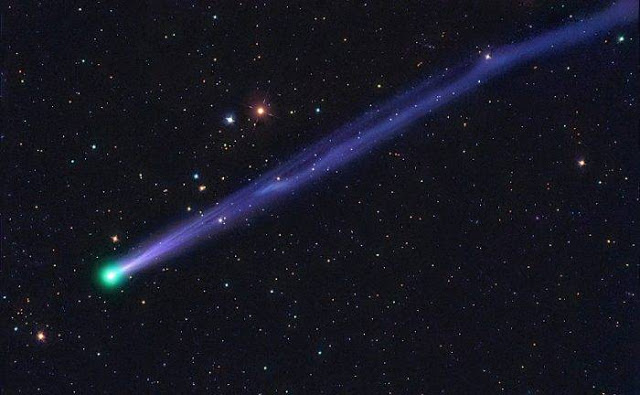

Komet Berekor Panjang

Komet berekor panjang tentu saja adalah komet yang ekornya panjang.
Maksudnya, komet berekor panjang adalah komet yang memiliki garis lintasan
sangat jauh melalui daerah- daerah yang sangat dingin di luar angkasa sana.
Dengan melewati banyak daerah yang dingin maka komet ini memiliki banyak
kesempatan untuk menyerap gas- gas yang ada di sekitarnya. Kemudian ketika
mendekati matahari, komet ini melepaskan gas sehingga akan membentuk koma
serta ekor komet yang ukurannya sangat panjang.